Melhor intérprete · 29º Festival da Canção de Alvinópolis – MG
Meu triunfo é o rock n' rollMovidos pelo Festival da Canção de Alvinópolis, nasce a parceria.
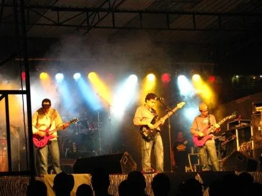

Em breve, nosso primeiro álbum
Vem em mim, correnteza
Uma jornada poética e sensorial pela força transformadora da natureza e pelos fluxos internos da experiência humana. Entre paisagens, afetos e movimento, Correnteza celebra tanto o interior de Minas Gerais, onde essa música nasce, quanto o universo íntimo de sentimentos, memórias e transformações que atravessam cada pessoa. O álbum marca ainda o amadurecimento de uma parceria musical e de uma amizade construída ao longo de mais de quinze anos.
Thales Carvalho e Thayson Azevedo constroem há mais de 15 anos uma trajetória dedicada à música autoral em Minas Gerais. Reconhecido por sua participação e premiações em festivais da canção, o duo traz consigo o aprendizado da música feita no interior mineiro e o coloca em diálogo com diferentes caminhos da música brasileira e do rock. Em Correnteza, seu novo álbum, essas águas se encontram em um trabalho que celebra suas raízes e, ao mesmo tempo, se abre à experimentação.
Thales e Thayson se conheceram em 2007, ainda muito jovens, durante as aulas de musicalização de uma banda de instrumentos de sopro de sua cidade natal, Alvinópolis, no interior de Minas Gerais. Foi nesse ambiente que amizade e música começaram a caminhar juntas. A partir de 2009, ao lado de outros amigos, formaram seu primeiro projeto musical: uma banda de rock. Desde então, seguiram compondo, tocando e construindo uma parceria que atravessaria diferentes projetos e momentos de suas vidas.
Parte importante dessa formação aconteceu nos festivais de música autoral. A convivência com compositores, intérpretes, músicos e diferentes formas de fazer canção transformou esses espaços em verdadeiras escolas para a dupla. Entre participações, premiações e projetos realizados por meio de leis de incentivo à cultura, Thales e Thayson foram amadurecendo uma linguagem própria, marcada pelo encontro entre a canção brasileira, a experiência do rock e a musicalidade aprendida no interior.
Essa caminhada deságua em Correnteza, álbum cuja gravação começou em 2024. O trabalho nasce do desejo de olhar novamente para as próprias raízes e celebrar a música mineira a partir da experiência particular da dupla. Não se trata de reproduzir uma tradição, mas de atravessá-la com tudo aquilo que Thales e Thayson ouviram, tocaram e aprenderam ao longo dos anos. Assim, referências da canção brasileira convivem com o rock e com outras sonoridades, criando uma música ao mesmo tempo ligada ao lugar de onde veio e aberta para outros caminhos.
A construção do álbum também reuniu importantes músicos da cena mineira. A produção ficou a cargo do produtor e baixista Felipe Fantoni, e as gravações contaram ainda com a participação do baterista Arthur Rezende. Essas colaborações ampliam a dimensão coletiva de Correnteza e aproximam ainda mais o trabalho da rede de músicos que movimenta a produção musical contemporânea em seu lugar de origem.
O próprio nome do álbum traduz esse movimento. Ele é feito de nascimentos, encontros, desvios e confluências: mais de quinze anos de história que seguem seu curso até chegar a essas canções. Essa ideia de fluxo também aparece nas letras, atravessadas por rios, águas, ventos, fogo, caminhos e outras imagens da natureza. São imagens que nascem de uma sensibilidade formada no interior de Minas Gerais, onde a paisagem não é apenas cenário, mas parte da maneira de perceber o mundo. Por isso a obra também dialoga com uma longa tradição da canção feita em Minas e em tantos interiores do Brasil, onde a natureza frequentemente se transforma em matéria de poesia. No álbum, porém, ela não aparece apenas para ser contemplada. A paisagem externa também abre caminho para uma paisagem interior. Rios, ventos, águas e movimentos da terra acabam falando de passagem, desejo, memória, transformação e sentimento.
Há, portanto, duas naturezas em Correnteza: aquela que se vê ao redor e aquela que cada pessoa carrega dentro de si. Entre uma e outra, Thales Carvalho e Thayson Azevedo apresentam um álbum que olha para o lugar de onde vieram enquanto continua seguindo adiante — como toda correnteza.
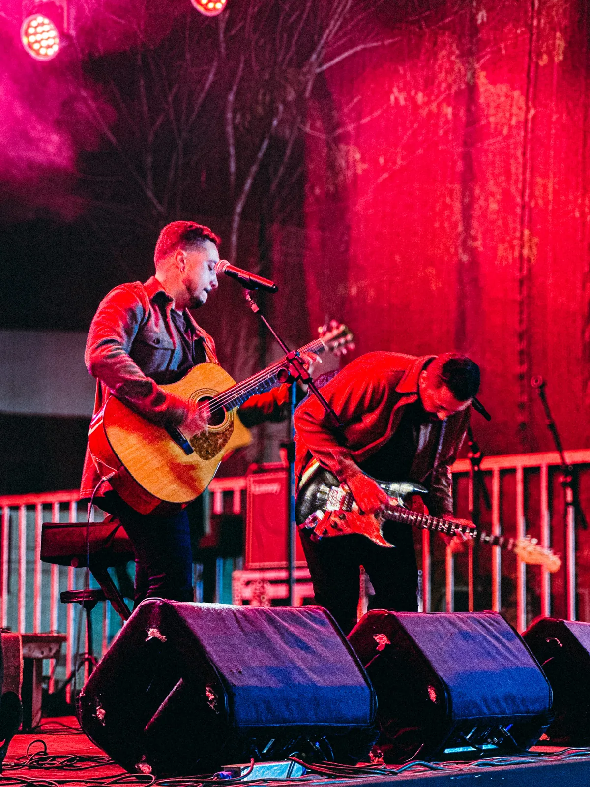
Movidos pelo Festival da Canção de Alvinópolis, nasce a parceria.

Com a banda Hard Case.
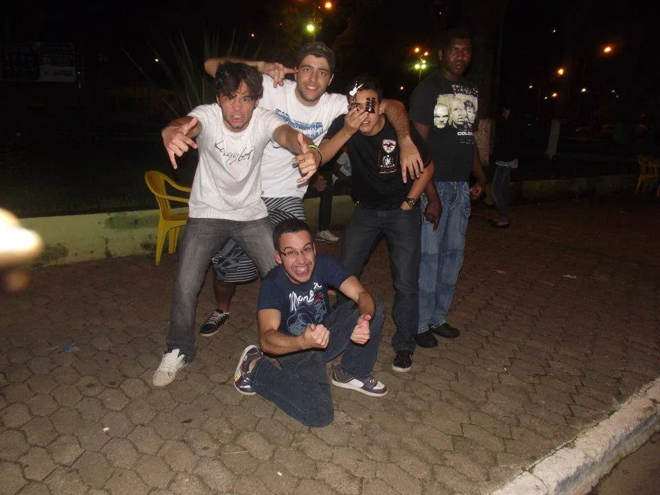
Já como Paralello.
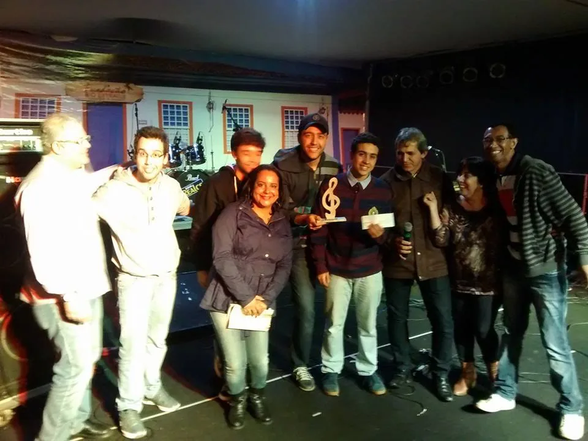
Paralello no 36º Festival da Canção de Alvinópolis – MG.
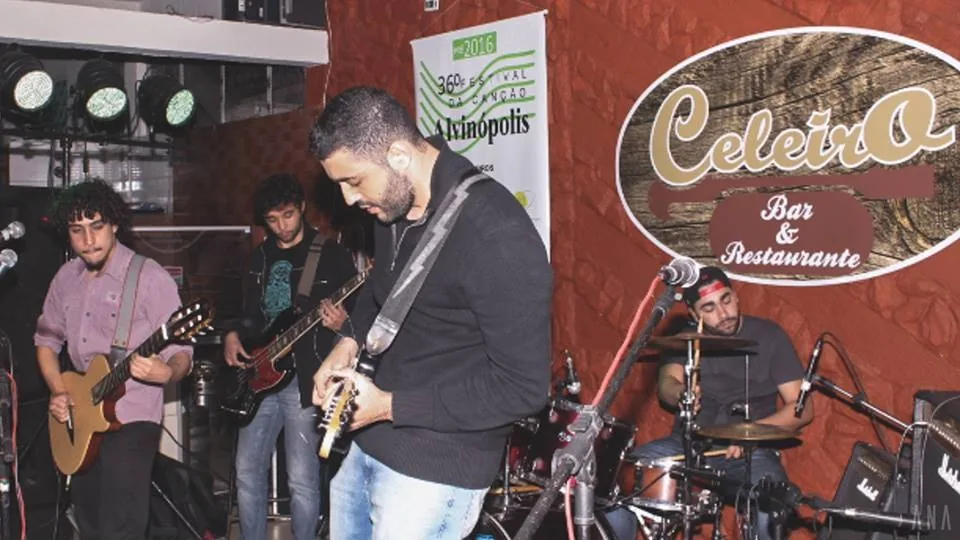
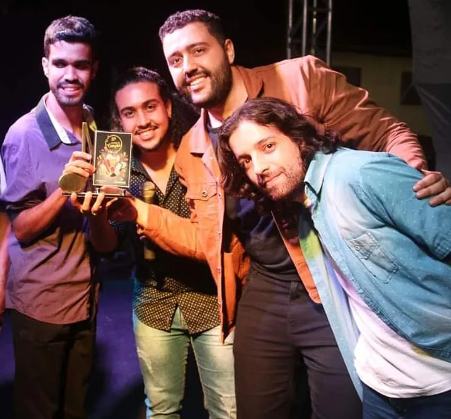
A canção premiada ganha videoclipe em 2024.
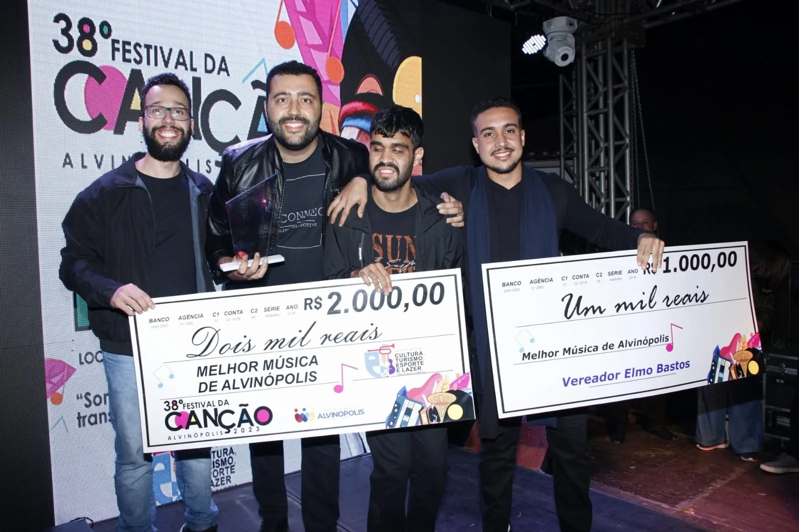
A dupla volta a ser premiada no Festival da Canção.
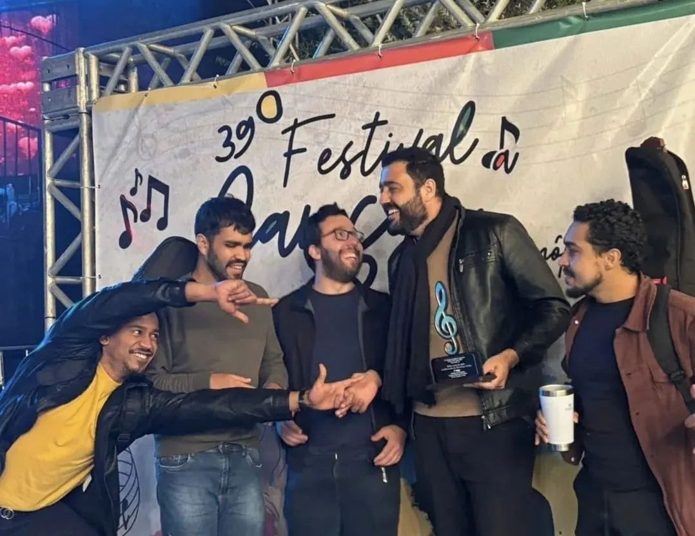
Mais uma canção premiada no Festival da Canção de Alvinópolis.
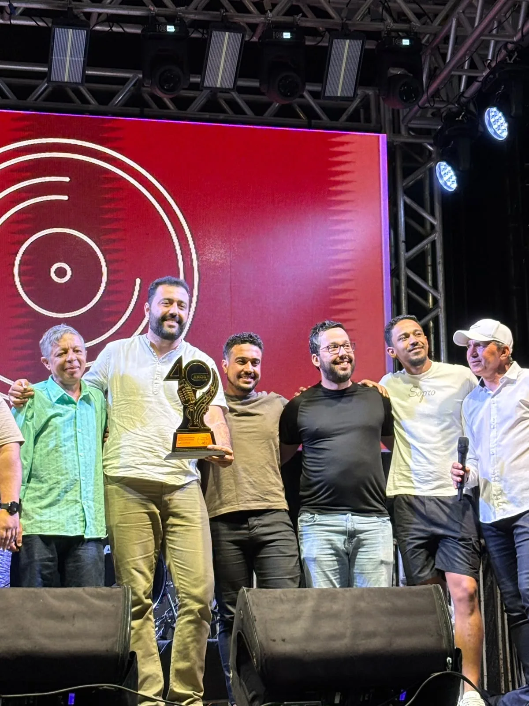
Os singles chegam às plataformas e o primeiro álbum se aproxima.
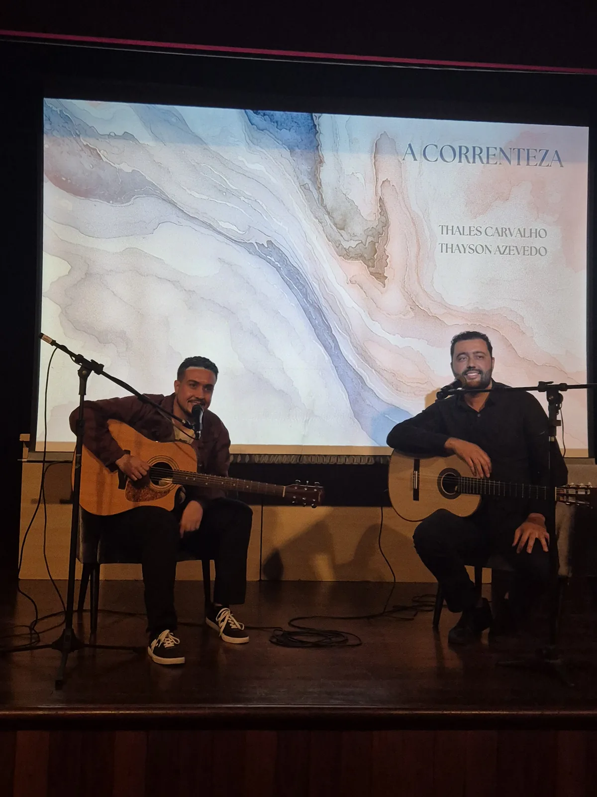
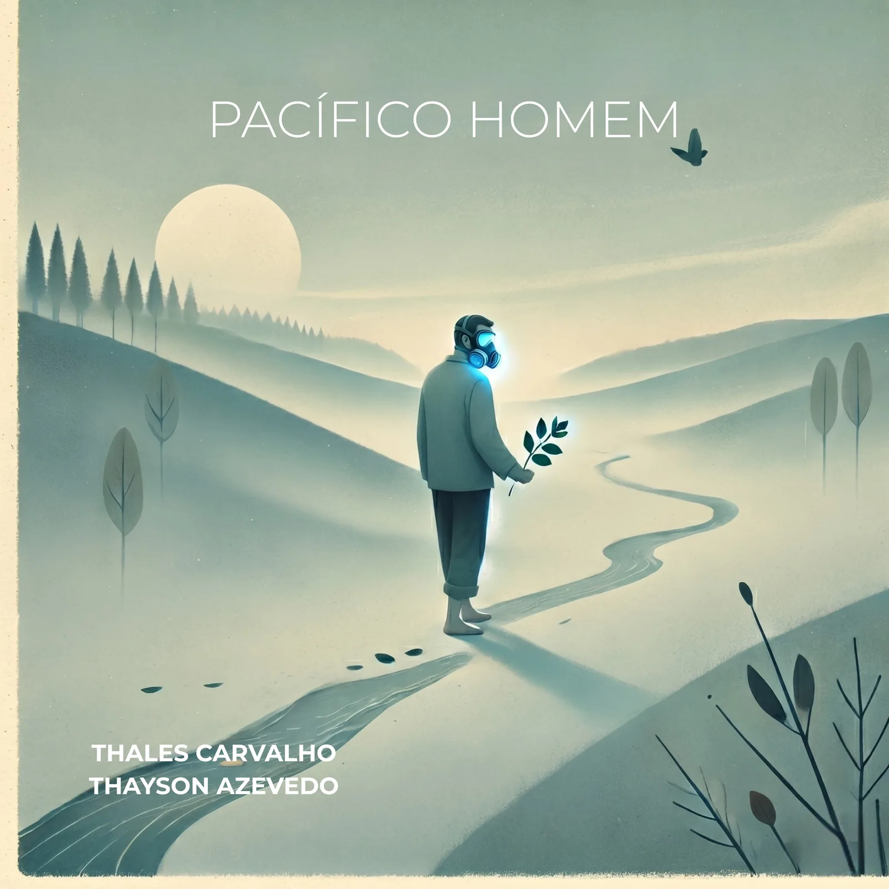
Composta na Rua Pacífico Homem, em Ouro Preto
Produzido de forma independente, o single flerta com a sonoridade da música brasileira setentista.
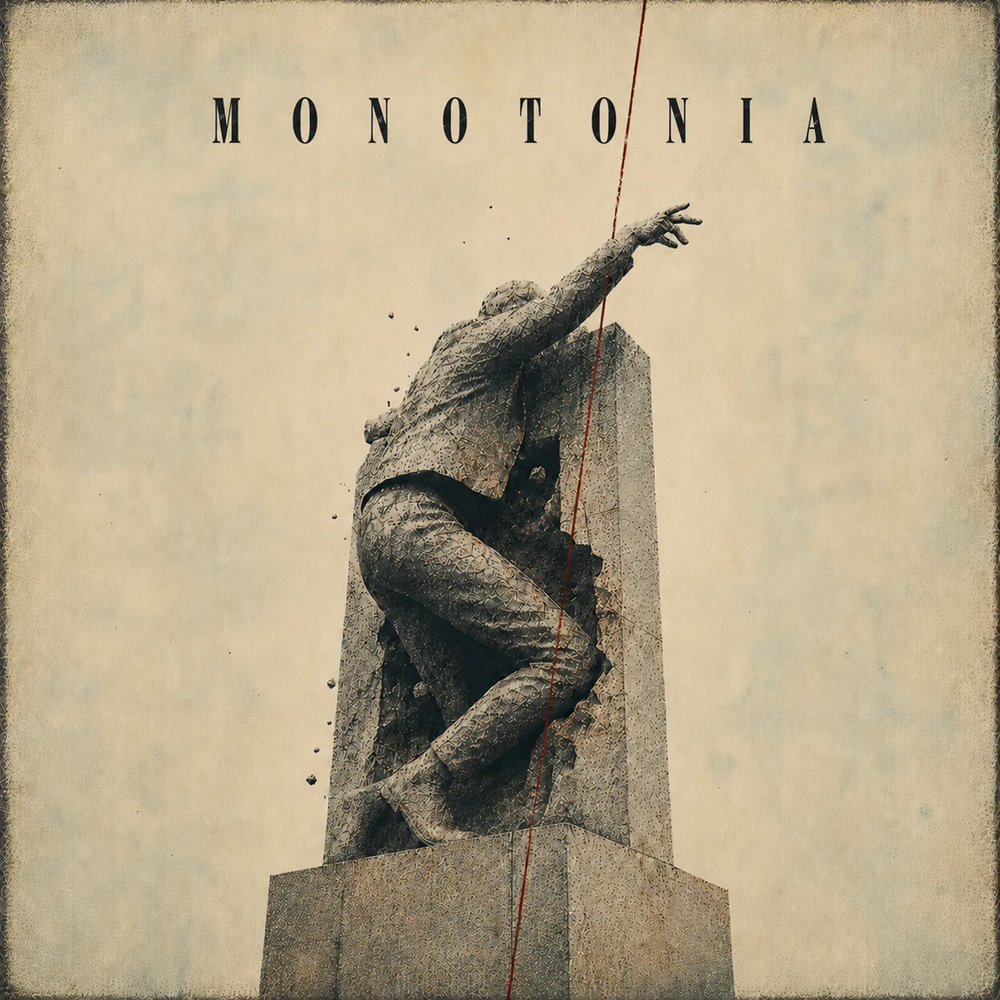
Das raízes no rock
Composição premiada no Festival da Canção de Alvinópolis em 2012, relançada pela Paralello, um dos projetos de rock clássico da dupla.
Vem em mim, correnteza
O primeiro álbum da dupla, com nove faixas. Em breve nas plataformas.
Faixas e encarte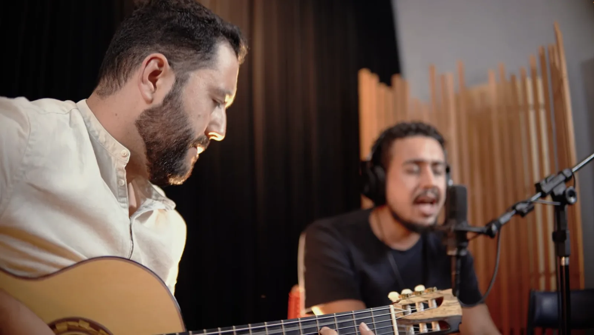
Faixa do álbum
Clipe no formato de making of, registrando o processo de gravação.
Em breve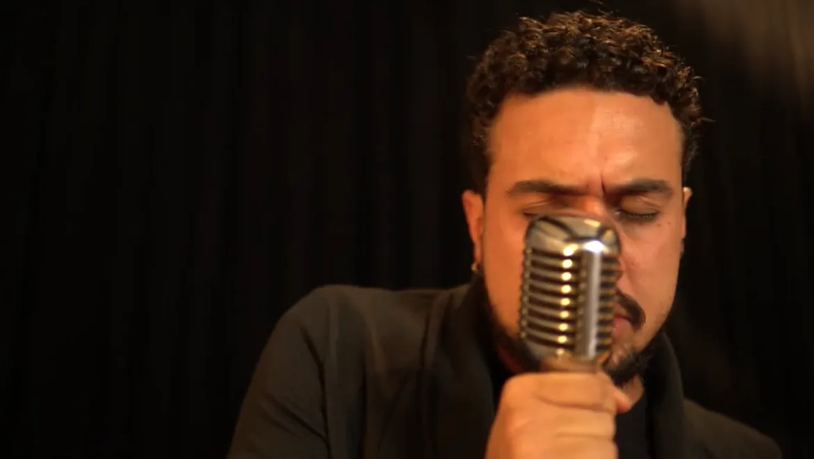
Faixa do álbum
Clipe no formato de making of, registrando o processo de gravação.
Em brevePalcos, estúdios e bastidores. Toque numa foto para ampliar.
Shows, festivais, parcerias e imprensa.